"As a blacksmith, you return to your home town and are shocked to find it recently abandoned and overrun by trolls. Bash your way through the hoardes with brawn and skill in search of answers which all lead to the church and their secrets."
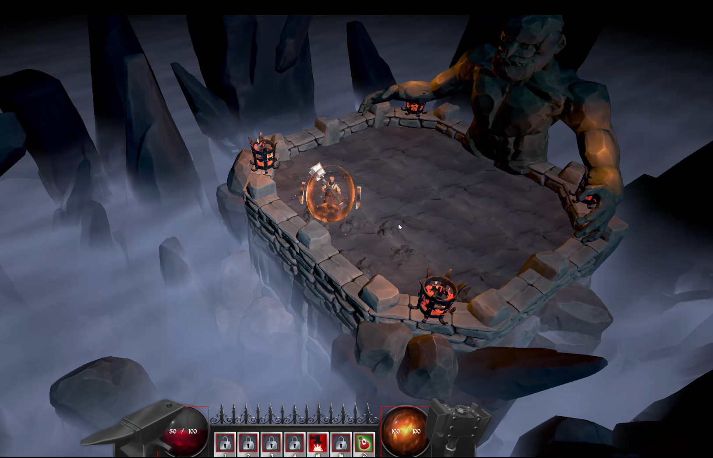
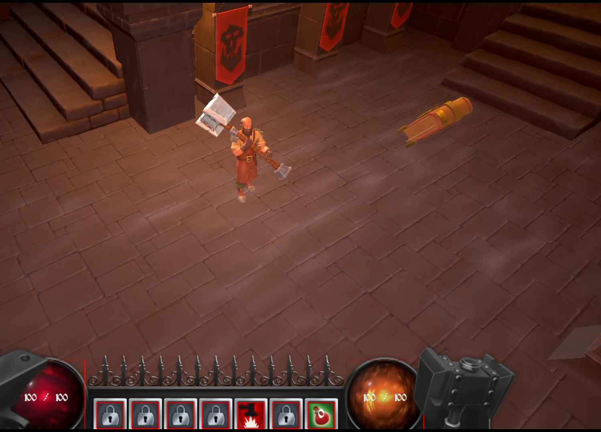
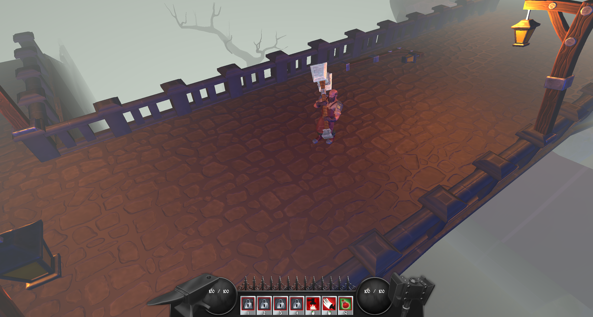
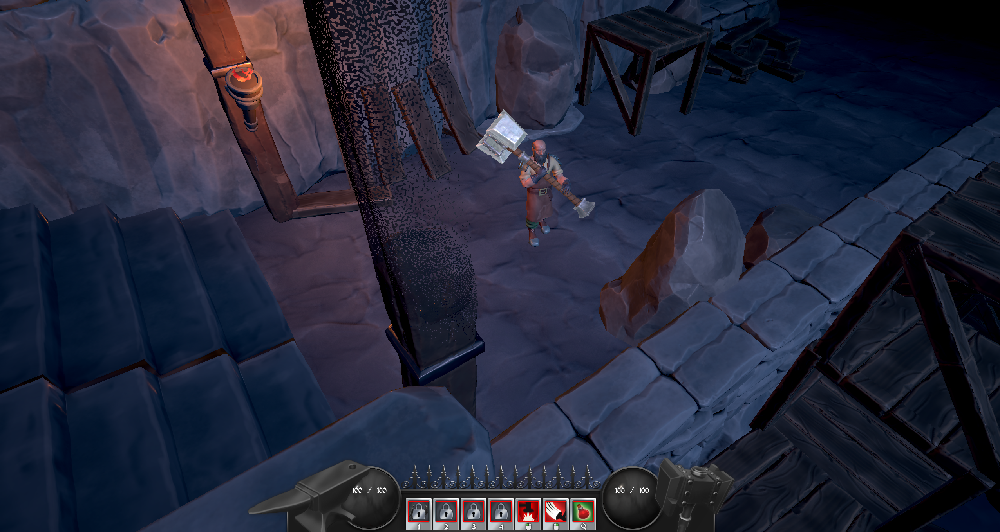
Specifications:
- Engine: TGE (Custom DX11)
- Platform: PC
- My Role: Technical Art, Animation, VFX
This was the fifth group project developed in TGE, inspired by the theme and gameplay of Diablo 3. The project
focuses on exploration and combat, featuring four distinct levels that culminate in a boss fight.
The player character is equipped with a two-handed hammer which features primary attack mapped to the left mouse
button and five unique
abilities, which are unlocked progressively throughout the game. Additionally, the game includes two enemy
types, an elite enemy variant with random modifiers, and a boss encounter.
My role focused heavily on rigging and animation, with primary responsibility being the player character. I was
also responsible for creating environment and UI shaders, including fog, resource orbs, vignette, color grading,
shaders for tileable textures and more.
In addition, I created various VFX, including effects for player abilities, pickups, and environmental
elements.
One of the most important shaders I developed was the resource orb shader. Since these
orbs are visible at all times during gameplay, they required more polish and iterating than any other effect in
the project.
The goal was to create two visually consistent yet distinct orbs representing the health and rage resources. The
technical constraints were strict: quad as a geometry for each orb, a single texture slot, and no blending modes
other than opaque with alpha clipping.
The creation process began with defining the main shape. Using simple math operations—calculating
length() of UV and
discarding pixels below a threshold—I quickly established the base form of each orb.
Next, I developed flow patterns. The rage orb was designed to resemble flames, with chaotic motion and intense
coloration. In contrast, the health orb features a calmer, liquid-like motion with slower flow, a red color
palette, and a subtle pulsing center to suggest a beating heart.
The core patterns for both orbs were created using multiple noise textures generated in IlluGen,
with one noise texture used to modulate the UVs of another. Additional UV distortion was applied to create a
spherical flow, enhancing the illusion of depth. Coloring was achieved using a three-way lerp with hand
picked values.
After establishing the patterns and colors, I implemented fake lighting. Each orb includes fake directional
light, rim lighting, and specular highlights to enhance the 3D appearance and better integrate with the game's
lighting.
The final visual component was the background visible when the orb is not full. For this, I created a
scratch-mark mask in IlluGen, embedded as a single channel within a noise texture. In the shader,
this mask was
assigned a color, and its visibility was controlled using a smoothstep() function along the Y-axis
of UVs animated
via a constant buffer variable.
Rage Orb - final version.
Health Orb - final version.
Creating this shader was a highly iterative process.
The initial final version of the shader used three textures: one for noise masks, one for the background, and a
gradient atlas for coloring. Due to engine limitations, the shader was later optimized to use a single texture
containing three noise masks and one background mask.

First iteration of rage orb.

First iteration of rage orb.
My second major contribution in this project was the creation of the
While designing the effect, I considered what features a particle system would normally provide:
- Spawning quads over time
- Movement in one or multiple directions
- A lifetime parameter to drive shader behavior
- Smooth transitions without visible popping
- Billboarding toward the camera
All of these behaviors can be simulated using vertex and pixel shaders—except for spawning geometry.
However, as long as the effect is continuous, it is possible to convincingly fake spawning by moving
geometry back and forth while manipulating their scale and visibility.
To achieve this, I created a custom model using a Python tool in Blender that generates a stack of planes
with minimal offsets. This stack is then imported into the engine.
In the vertex shader, I grouped vertices using time parameter and the fmod() function, this allowed me to
simulate particle-like behaviors such as randomized movement, scaling, rotation, and billboarding in a
continous and repeating manner.
int groupID = input.vertexID / 4;
int localID = input.vertexID % 4;
static const float2 localCorners[4] =
{
float2(-0.5, -0.5),
float2(0.5, 0.5),
float2(0.5, -0.5),
float2(-0.5, 0.5)
};
float3 centerObject = float3(0, 0, 0);
float3 centerWorld = mul(ObjectToWorld, float4(centerObject, 1)).xyz;
float3 objectPos = float3(ObjectToWorld[0].w, ObjectToWorld[1].w, ObjectToWorld[2].w);
float objectRandomVal = Hash2(objectPos);
float fmodMax = 15;
float fmodPosValue = 20;
float minVelocity = 2;
float maxVelocity = 5;
float timeDis = fmod((Timings.x * remap(Hash2(float3(objectRandomVal, groupID, groupID + objectRandomVal)), 0, 1, minVelocity, maxVelocity)), fmodMax) * fmodPosValue;

To adapt this particle-like behaviour for the
Three spheres were created in Blender, each larger than the previous, and combined with a stack of 30
planes into a single mesh.
In the engine, both the vertex and pixel shaders divide the mesh into groups (planes and spheres) using
A.
B.
C.
D.
One of my primary responsibilities was creating rigs and animations, focusing mainly
on the player character and environmental objects.
All rigs and animations were created in Blender.
Player animations: movement, attack, wide swing, death, idle, ability 1-4.
Environmental animations: wooden gate (open/close), metal gate (open/close).
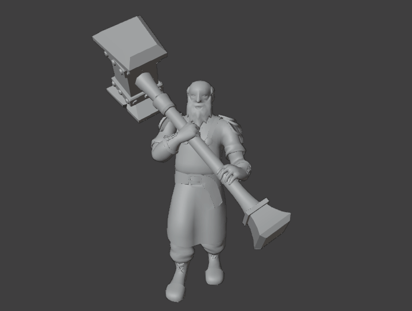
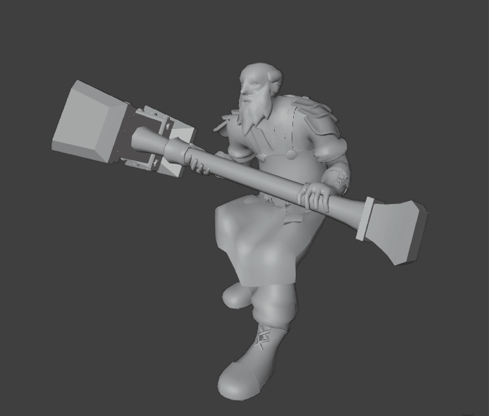
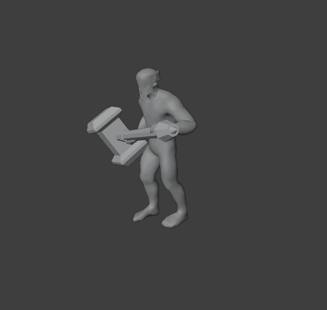

A very usefull shader, created in collaboration with Efrem Torrisi, was a see-through shader that ensures the player
remains visible even when occluded by the environment.
This functionality was implemented as part of a gbuffer shader applied to all environmental objects. By
calculating and using a
cylindrical mask between positions of the player and the camera, pixels within that volume could be discarded.
To avoid harsh cutoffs, a fine scale gradient noise was applied to soften the transition.
The VFX pipeline for this project relied heavily on flipbooks. Most flipbooks and
their corresponding meshes were created in IlluGen and played in-engine using a flipbook shader.
The created flipbooks included
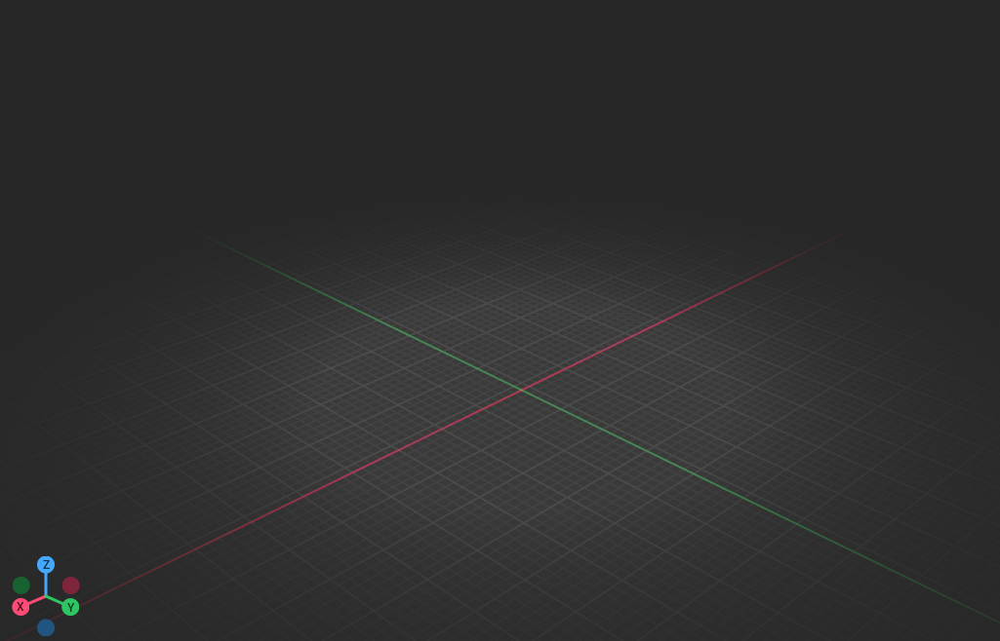
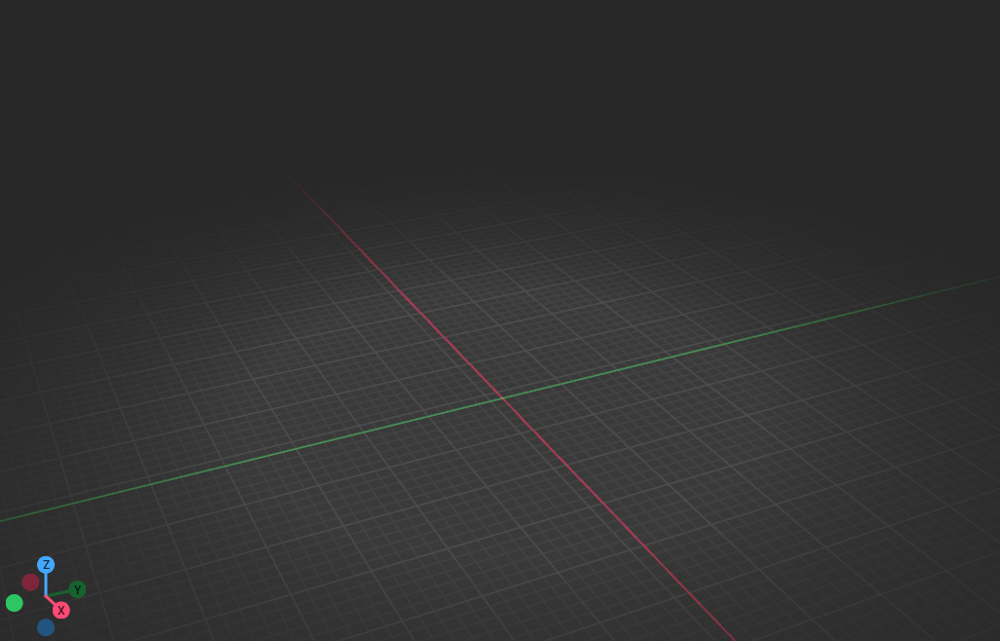

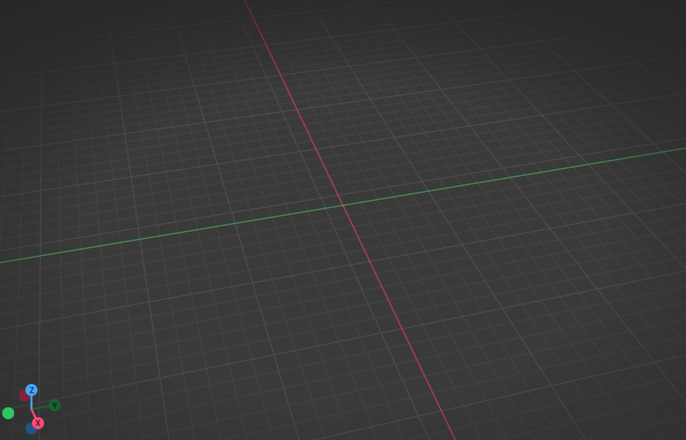
Some flipbooks—such as the
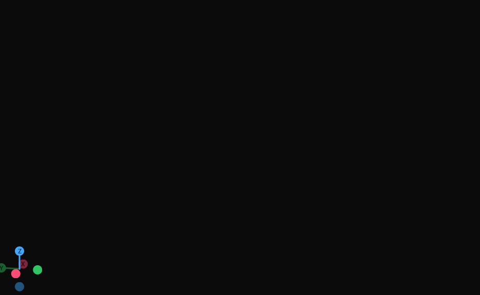
All of the effects above have been created from one and same flipbook applied on different meshes.